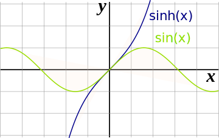
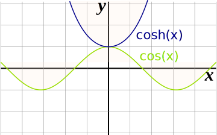
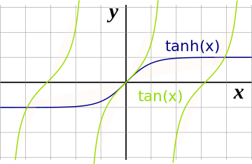
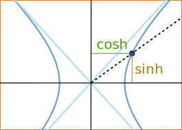

Hyperbolic Functions
The two basic hyperbolic functions are "sinh" and "cosh":
Hyperbolic Sine:
sinh(x) = ex − e−x 2
(pronounced "shine")
Hyperbolic Cosine:
cosh(x) = ex + e−x 2
(pronounced "cosh")
They use the natural exponential function ex
And are not the same as sin(x) and cos(x), but a little bit similar:

sinh vs sin

cosh vs cos

Catenary
One of the interesting uses of Hyperbolic Functions is the curve made by suspended cables or chains.
A hanging cable forms a curve called a catenary defined using the cosh function:
f(x) = a cosh(x/a)
Like in this example from the page arc length :

Other Hyperbolic Functions
From sinh and cosh we can create:
Hyperbolic tangent "tanh" (pronounced "than"):
tanh(x) = sinh(x) cosh(x) = ex − e−x ex + e−x

tanh vs tan
Hyperbolic cotangent:
coth(x) = cosh(x) sinh(x) = ex + e−x ex − e−x
Hyperbolic secant:
sech(x) = 1 cosh(x) = 2 ex + e−x
Hyperbolic cosecant "csch" or "cosech":
csch(x) = 1 sinh(x) = 2 ex − e−x
Why the Word "Hyperbolic" ?
Because it comes from measurements made on a Hyperbola:

So, just like the trigonometric functions relate to a circle, the hyperbolic functions relate to a hyperbola.Identities
- sinh(−x) = −sinh(x)
- cosh(−x) = cosh(x)
And
- tanh(−x) = −tanh(x)
- coth(−x) = −coth(x)
- sech(−x) = sech(x)
- csch(−x) = −csch(x)
Odd and Even
Both cosh and sech are Even Functions, the rest are Odd Functions.
Derivatives
Derivatives are:
d dx sinh(x) = cosh(x)
d dx cosh(x) = sinh(x)
d dx tanh(x) = 1 − tanh2(x)